A_Darius_LOL_Run_TP 动画（1.167s / 35 帧 / 挂在正确骨架上）。
这条我一开始判断错了方向。第一版只把 SK_Darius_GodKing 的
Material Slot 7（Darius_Godking_Axe_C000_MI，FBX 自带的插地待机斧）赋了全透明
M_Invisible，确认该材质是 BLEND_MASKED + OpacityMask 常量 0，
数学上完全不可见 —— 但黑影依然存在。
用 Blender 逐网格审计后找到真凶：槽 0 的描边壳（Outline Shell）是整个模型的完整复制品， 里面也复制了一把插地斧头。描边材质是反向外壳着色，渲染出来就是纯黑剪影。
| 网格对象 | 顶点数 | 材质 | 地面以下顶点 |
|---|---|---|---|
darius_godking_mesh_LOD0 | 50827 | Darius_Godking_Outline_MI ← 描边壳 | 2444 |
darius_godking_mesh_LOD0.007 | 5661 | Darius_Godking_Axe_C000_MI ← 斧头本体 | 2526（已被 M_Invisible 挡住） |
解法：Scripts/blender_22_strip_all.py —— 以斧头本体顶点建 KDTree，
把描边壳中距离 < 5cm 的顶点判为斧头并删除其所属面；再把斧头本体网格对象整体删除。
实测距离分布是完美双峰（斧头顶点 p10 = 3.3mm，其余 p20 已有 684mm），阈值极易选取。
描边壳：命中顶点 5367，删除面 4698 / 54239 已删除斧头网格对象 darius_godking_mesh_LOD0.007 全部网格地面以下顶点数: 0 ← 验收通过 SK 包围盒 z 范围: -41.3 ~ 206.2 → 3.8 ~ 206.2
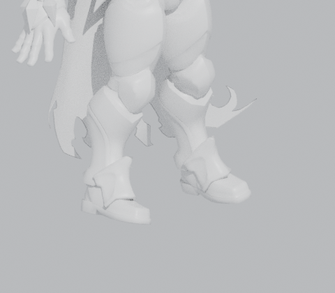
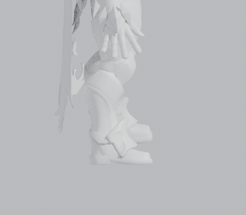
M_Invisible 的 cast_dynamic_shadow_as_masked
默认为 False —— 意味着 masked 材质自身不可见，却仍按实体投出完整阴影。
已改为 True 并落盘。（Python 属性名是 cast_dynamic_shadow_as_masked，没有 b_ 前缀）
replace_existing=True 重导后 ——
槽位 8 → 7，所有 MI_* 材质覆盖按槽名完整保留；
hand_rSocket 连同 0.01 缩放一起自动保留；
战斧世界尺寸仍是 21 × 172 × 77 cm，挂接位置不变；
已有 AnimSequence 挂在 Skeleton 上，未受影响。Saved/Backup_20260918/。
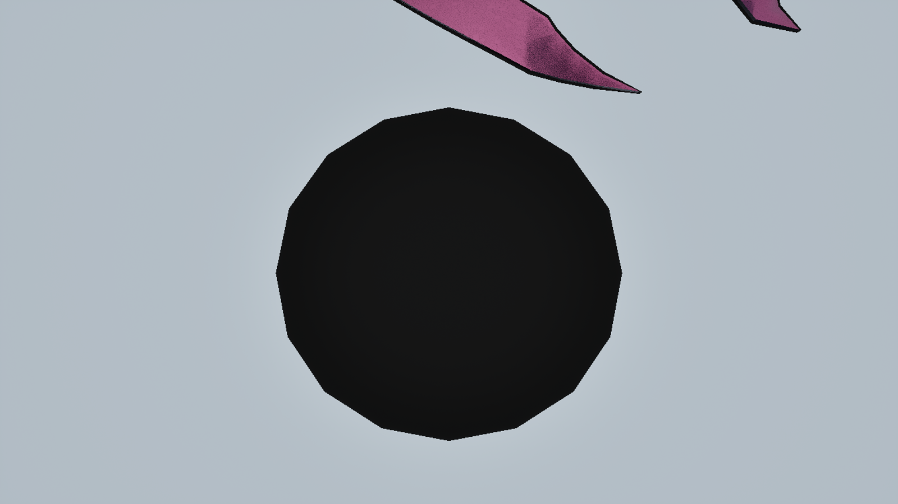
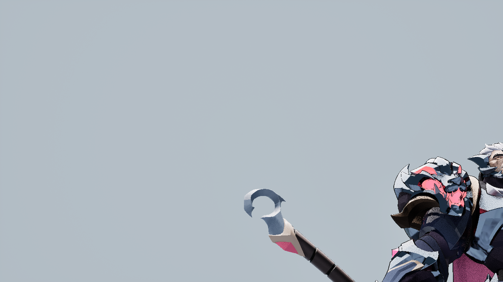
根因链：2XKO 的 FBX 以「米」为单位制作，UE 导入时在根骨骼上打了 100× 的米→厘米换算矩阵。
该缩放被 pelvis → spine → clavicle_r → hand_r → hand_rSocket 无条件继承，
于是挂到插槽上的 172cm 战斧被放大成 172 米。
关键发现：之前 17:35 的修复脚本确实把 hand_rSocket.relative_scale 改成了 0.01，
但当时编辑器在 PIE 运行中，save_loaded_asset() 被引擎安全锁拒绝 —— 只改了内存，没落盘。
所以编辑器一重启，Bug 立刻复活（本次实测：世界缩放 = 100）。
本次修复：在非 PIE 状态下重新写入 hand_rSocket.relative_scale = (0.01, 0.01, 0.01) 并
save_loaded_asset 成功，文件时间戳已更新（SK_Darius_GodKing.uasset → 18:02）。
重新 spawn 角色后实测：插槽世界缩放 = 1.0，武器组件世界缩放 = 1.0，已永久生效。
before: WeaponAxe WorldScale = (100.00, 100.00, 100.00) ← 172 米 after : WeaponAxe WorldScale = (1.00, 1.00, 1.00) ← 1.72 米 ✅ 已存盘
武器已经拆开了：SM_Darius_GodKing_Axe 是独立的 StaticMesh，
在 BP_DariusCharacter 里作为 WeaponAxe 组件挂在 hand_rSocket 上。
但骨骼网格体上的那把「原版斧」还在（就是 ① 里的 Slot 7）。 它靠材质隐藏，所以从几何层面看，「斧头」确实还长在人物身上 —— 这也是为什么你会觉得没拆干净。
我把两套骨架都导进 Blender 做了量化比对，结论是：差异不在「角度」，而在「整套骨骼语义」。
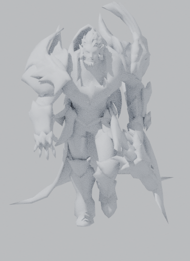
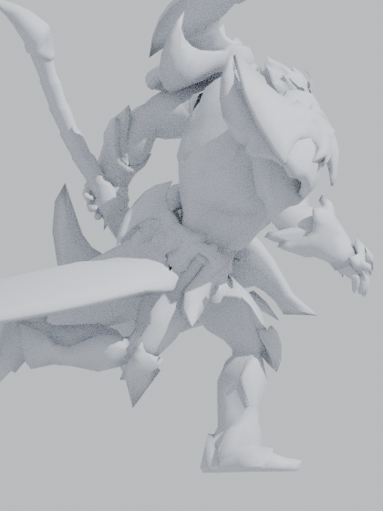
| 对比项 | LOL 源（.anm → .glb） | 2XKO 目标（SK_Darius_GodKing） |
|---|---|---|
| 骨骼数 | 179 | 309 |
| 命名体系 | Riot 自有（Spine1 / L_Hip / L_KneeUpper） | UE Mannequin 规范（spine_01 / thigh_l / calf_l） |
| 脊柱结构 | Spine1 挂在 Root 上，与 Pelvis 平级（不是父子） | pelvis → spine_01 → spine_02 → spine_03 |
| 腿链 | Hip → KneeUpper → KneeLower → Foot → Toe（膝下拆两段） | thigh → calf → foot → ball → toe |
| 手臂链 | Clavicle → Shoulder → ElbowUpper → Elbow → Hand（多一段） | clavicle → upperarm → lowerarm → hand |
| 朝向 | 面朝 +Y（左手在 −X） | 面朝 −Y（左手在 +X） |
| 单位 | 身高 185.22 单位 | 身高 1.80 单位（米） |
| 独有骨骼 | 狼灵 Lion_*、王座 Throne/Gem/Piece_*、SnapWeapon | 完整面部表情骨（~150）、披风链 cape_chain_*、weapon_jnt |
161°。spine_03、ball_l 这类源里没有的中间骨；
如果只对映射表里的骨骼赋值、忽略这些「中间骨」的父级旋转继承，手臂会变成僵尸直伸。核心脚本：Scripts/blender_10_retarget.py（Blender 5.2 无头执行，可重复跑、可调参）
算法核心（世界旋转增量法）： D_src = W_src_pose · Rest_src⁻¹ # 源骨骼相对自身静止姿态的旋转增量 D_tgt = Q · D_src · Q⁻¹ # 用基准系对齐矩阵 Q 转到目标骨架坐标系 W_tgt = D_tgt · Rest_tgt # 套到目标骨骼的静止朝向上 basis = Rest_rel⁻¹ · Rp⁻¹ · W_tgt # 换算成 Blender 局部 basis 写入关键帧 Q 由两套骨架各自的「胯骨轴 + 世界上方」叉乘求得（实测 Q = 绕 Z 轴 180°）
spine_01/02/03 按 45%/35%/20% 权重
叠加前倾，并对 neck_01 做 60% 反向补偿以保持视线水平。
参数可在命令行直接调（当前 12°）。0.009726（由两套骨架静止身高自动求得），
根骨骼位移正确落到 2XKO 的米制尺度上。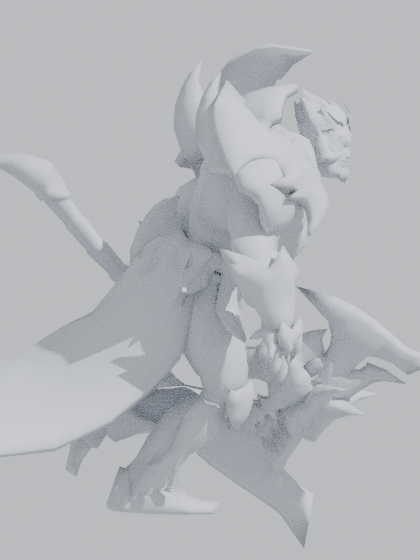
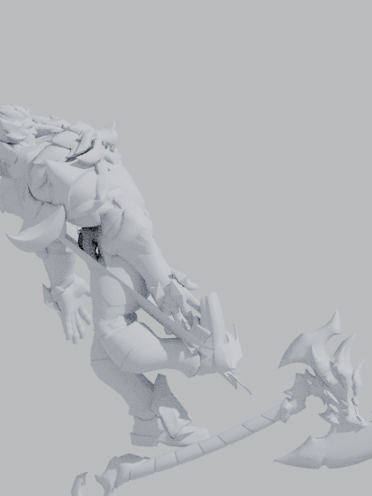
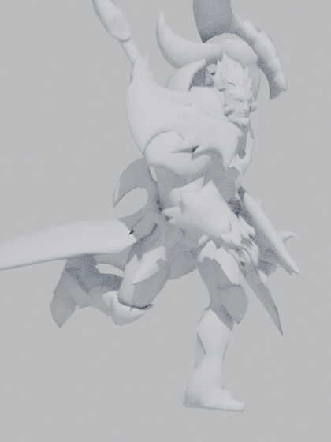
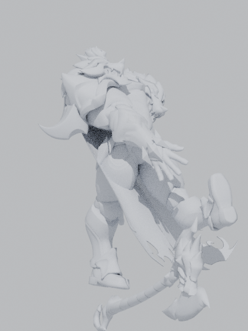
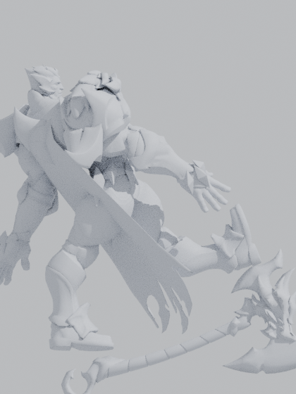
| 产物 | 路径 | 状态 |
|---|---|---|
| AnimSequence | /Game/Character/Darius/Anims/A_Darius_LOL_Run_TP |
已导入 1.167s / 35 帧 / 骨架 = SK_Darius_GodKing_Skeleton |
| 骨骼插槽修复 | SK_Darius_GodKing : hand_rSocket |
已存盘 relative_scale = 0.01 |
| 重定向 FBX | Saved/Retarget/A_Darius_LOL_Run_TP.fbx |
已导出 11.2 MB（含目标网格） |
| 重定向脚本 | Scripts/blender_10_retarget.py |
可复用 命令行参数化 |
| 源动画预览渲染 | Saved/BlenderShots/ |
诊断素材 |
能看，但还不能直接「拿去用」。 重定向解决了「骨骼能对上」， 但 LOL 动画本身是给 MOBA 俯视角做的，剩下三件事必须补：
| 问题 | 现象 | 解决方案 |
|---|---|---|
| 足部滑步 | MOBA 步幅按「短腿 + 高移速」调谐，放到 2.47m 大长腿上会明显搓地 | AnimGraph 里加 Foot IK / TwoBoneIK 锁地，或在 Blender 阶段直接做 IK 烘焙（把脚掌触地帧坐标锁死，步幅由长腿自动延伸） |
| 根运动 / 速度匹配 | LOL Run 是原地循环，无 Root Motion；且步频与 UE CharacterMovement 的速度不匹配 | 计算每循环实际位移，写进 AnimSequence 的 Root Motion；
或在 AnimBP 里用 Locomotion Blendspace 按速度混合 Idle/Walk/Run |
| 运动状态机缺失 | 目前只能通过手动指定单一动画播放，没有 Idle ↔ Walk ↔ Run 切换 | 新建 ABP_Darius：State Machine（Idle/Walk/Run）+ Blendspace + Foot IK + 上半身持斧层 |
| 脊椎前倾还需手感微调 | 当前 12° 是几何补偿值，不是美术手感值 | 重跑脚本改最后一个参数即可，例如 ... 15 得到 15° |
ABP_Darius 动画蓝图，把 Idle / Walk / Run 状态机跑起来 —— 这是「拿起武器走路」的最小闭环。过程中编辑器因为一个脚本死循环（while is_in_play_in_editor(): sleep() 在 GameThread 上自锁）
卡死过一次，我强制重启了编辑器。已核实：关卡 Lv-FIght.umap 文件未被修改
（磁盘时间戳仍是 09-18 01:14，git 状态为未变更），
关卡内 7 个 Actor 原封不动：
StaticMeshActor_1 ← 六边形科技地砖 DirectionalLight_0 ← 主平行光 RectLight_1 ← 补光 SkyLight_1 ← 天光 ExponentialHeightFog_0 ← 远景雾霭 PostProcessVolume_1 ← 后期体积 PlayerStart_0
你当时看到「地面灯光不见了」，是我在抓验证截图时把编辑器视口切到了 Game View
并停在了奇怪机位、同时关掉了 ShowFlag.Selection —— 纯显示状态，不是内容丢失。
现已全部恢复（Game View 关闭、视口相机归位、ShowFlags 复原），
诊断过程 spawn 的 4 个临时 Actor（3 个相机 + 1 个测试角色）也已清理。